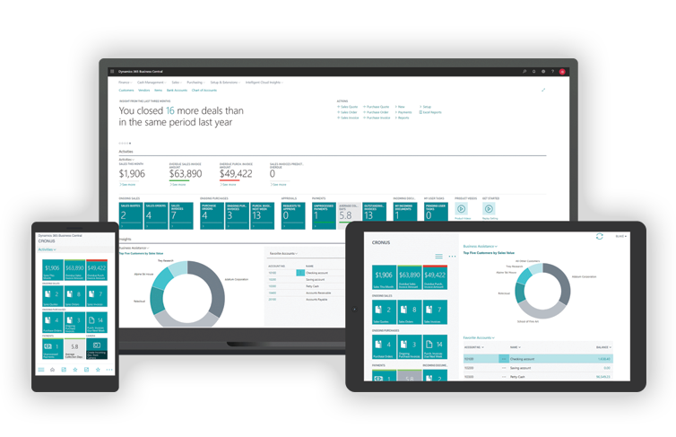
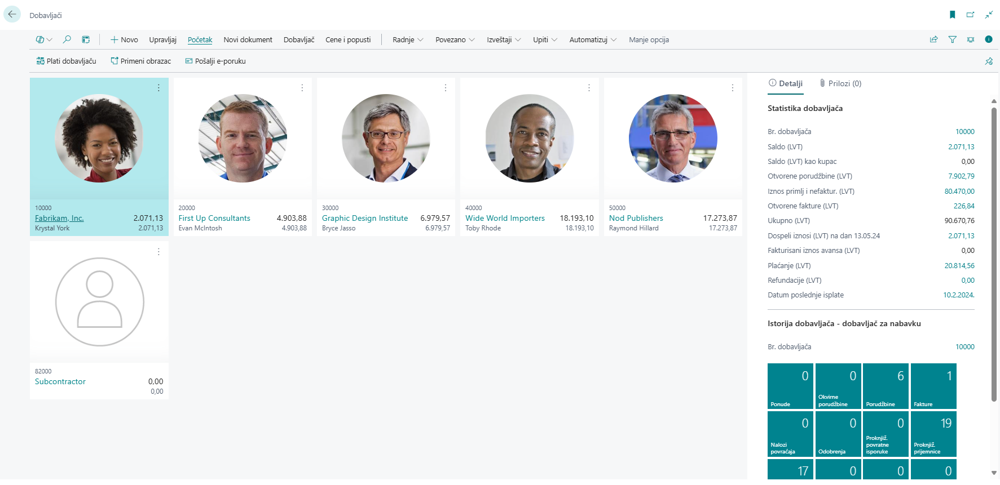
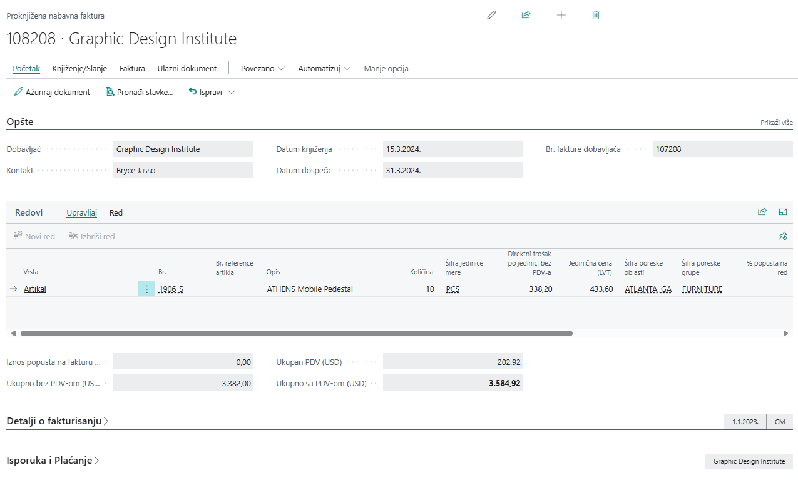
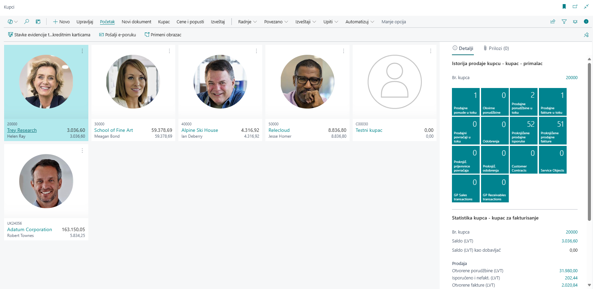
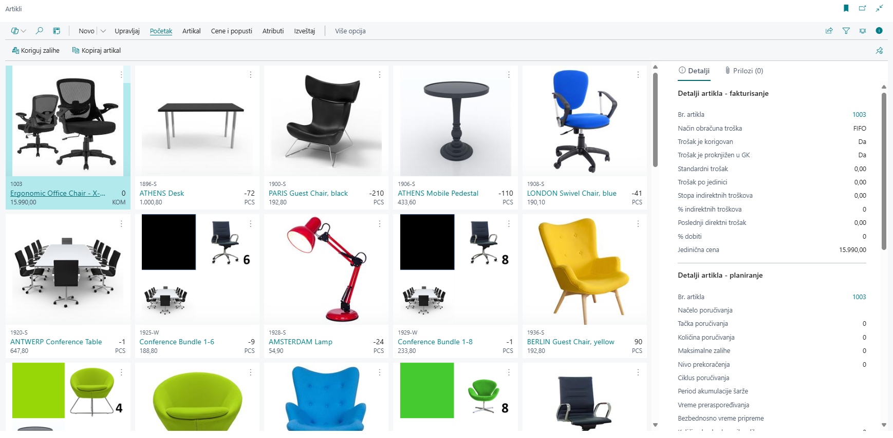
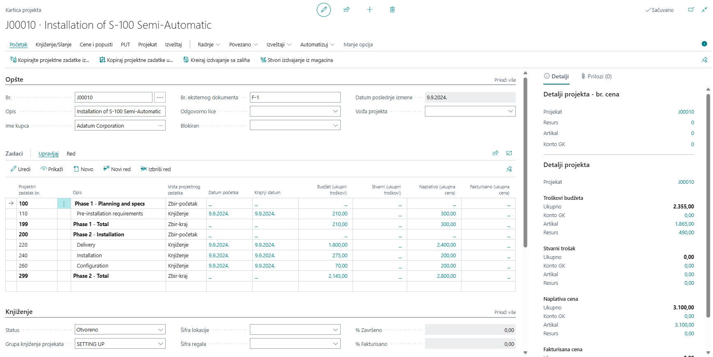
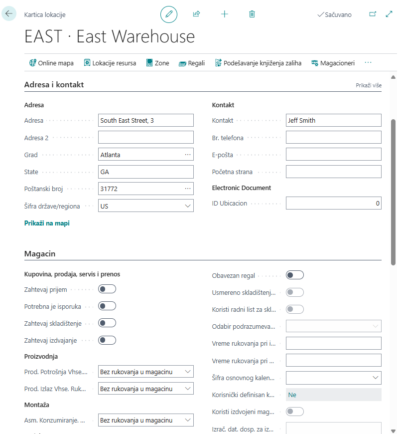

Standardne funkcionalnosti
Microsoft Dynamics 365 Business Central je integrisano poslovno rešenje posebno dizajnirano za mala i srednja preduzeća. Automatizuje i pojednostavljuje ključne poslovne procese, omogućavajući efikasno upravljanje svim segmentima poslovanja, uključujući finansije, nabavku, prodaju, skladištenje i proizvodnju, uz fleksibilnost cloud tehnologije koja omogućava lak pristup i skalabilnost.

Upravljanje finansijama
Business Central pruža sveobuhvatno rešenje za finansijsko upravljanje, omogućavajući efikasno planiranje, praćenje i kontrolu finansijskih aktivnosti. Od knjigovodstva i obračuna poreza do upravljanja gotovinskim tokovima i budžetima, Business Central osigurava tačnost i usklađenost sa finansijskim propisima. Pomoću ugrađenih analitičkih alata, kompanije mogu donositi informisane odluke i postići dugoročnu finansijsku stabilnost i rast.
Finansijski moduli
- Knjiga gotovine
- Konsolidacija finansija
- Kontrola kredita
- Dugotrajna imovina
- Glavna knjiga
- Međukompanijsko poslovanje
- Likvidnost
- Multidimenzionalna analiza
- Knjiga nabavke
- Knjiga prodaje
Funkcionalnosti
Finansijski moduli omogućavaju efikasno upravljanje fakturisanjem, uključujući izdavanje prodajnih i nabavnih faktura, kao i kreiranje i praćenje narudžbenica. Troškovi se mogu precizno raspodeliti, uz automatski obračun troškova robe i korišćenje različitih metoda vrednovanja zaliha. Sve finansijske transakcije beleže se automatski i knjiže u glavnoj knjizi, uz mogućnost korišćenja šablona za knjiženje radi standardizacije procesa. Osim toga, sistem pruža alate za analizu finansijskih podataka i upravljanje osnovnim sredstvima. Podržan je rad u više valuta i kompanija, što omogućava fleksibilnost i prilagodljivost poslovanju na globalnom nivou.
Izveštaji i analiza podataka
Business Central omogućava malim i srednjim preduzećima da koriste ugrađene analitičke alate za praćenje poslovanja. Pruža izveštaje i analitičke funkcionalnosti koje pokrivaju osnovne i kompleksnije poslovne procese, kao i mogućnost analize podataka u realnom vremenu kroz kontrolne table (dashboards) i Power BI aplikacije.
Funkcionalnosti
Finansijski izveštaji: Kreiranje finansijskih izveštaja koji uključuju podatke iz glavne knjige, budžeta i računa novčanih tokova, pomažu u praćenju finansijske stabilnosti i donošenju odluka.
Ključni pokazatelji performansi: Omogućava praćenje napretka prema poslovnim ciljevima, prepoznavanje problema i donošenje bržih odluka na osnovu specifičnih indikatora za prodaju, nabavku i druge funkcije.
Ugrađeni Power BI izveštaji: Business Central nudi integraciju sa Power BI koja se može koristiti za finansijske, prodajne, nabavne, inventarske i druge izveštaje.
Ad-hoc analiza podataka: Omogućava brzu analizu podataka bez potrebe za prethodnim kreiranjem izveštaja. Može se koristiti za analizu podataka u Excelu ili direktno sa stranica sa podacima.
Vrste izveštaja
Sledeća podela izveštaja u Business Central-u zasnovana je na ključnim funkcionalnostima koje sistem nudi za analizu podataka i praćenje poslovnih procesa. Business Central omogućava preduzećima da koriste različite vrste izveštaja za bolje praćenje performansi i donošenje informisanih odluka. U nastavku su objašnjene glavne vrste izveštaja u sistemu.
| Vrste Izveštaja u Business Central-u | |
|---|---|
| Vrsta Izveštaja | Opis |
| Finansijski izveštaji | Korišćenjem računovodstvenih rasporeda, preduzeća mogu pratiti finansijske podatke, vršiti analize iz glavne knjige i porediti ih sa budžetskim planovima. |
| Izveštaji u Excelu | Podaci se mogu izvoziti u Excel za detaljniju analizu, korišćenjem funkcija za analize podataka i "što-ako" scenarija. |
| Ugrađeni izveštaji | Business Central nudi više od 300 ugrađenih izveštaja koji pokrivaju širok spektar poslovnih procesa, uključujući analizu naplate potraživanja i mnoge druge. |
Ove funkcionalnosti omogućavaju preduzećima da efikasno analiziraju i prate poslovne performanse, optimizuju procese i donose bolje poslovne odluke na temelju konkretnih podataka.
Nabavka
Modul nabavke u Business Central-u omogućava efikasno upravljanje nabavnim procesima, kao i praćenje troškova nabavke i zaduženja prema dobavljačima. Pomoću ovog modula preduzeća mogu da kontrolišu zalihe, prate nabavne fakture i vrše automatske usklađivanje sa potraživanjima i obavezama prema dobavljačima.

Funkcionalnosti
Upravljanje nabavnim narudžbinama
Ova funkcionalnost omogućava kreiranje i praćenje svih nabavnih narudžbina i faktura, čime se obezbeđuje efikasan tok nabavnog procesa. Podržava parcijalni prijem robe, što omogućava primanje proizvoda u više isporuka prema dogovoru sa dobavljačem. Takođe, uključuje direktne isporuke od dobavljača do kupca (drop shipping), čime se eliminiše potreba za skladištenjem robe.

Upravljanje povratom nabavke
Sistem omogućava jednostavno kreiranje narudžbina za povrat robe dobavljačima u slučaju neispravnih ili neodgovarajućih proizvoda. Proces povrata može uključivati parcijalne povrate kada se samo deo narudžbine vraća, a preostali proizvodi ostaju u upotrebi. Pored toga, moguće je automatski generisati kreditne memo fakture koje reflektuju povrat, čime se olakšava praćenje refundacija ili zamenskih proizvoda. Ova funkcionalnost omogućava i povezivanje sa novim narudžbinama u slučaju da se vraćeni proizvodi menjaju za nove.
Upravljanje alternativnim adresama za narudžbine
Ova funkcionalnost omogućava precizno postavljanje više adresa za isporuku, što je korisno za kompanije koje posluju na više lokacija ili koriste eksterno skladištenje. Svaka nabavna narudžbina može biti povezana sa specifičnom isporučnom adresom, što omogućava tačnu distribuciju robe. Pored toga, omogućava lakše praćenje isporuka i bolju kontrolu zaliha, posebno kada se proizvodi primaju na različitim mestima u zavisnosti od potreba operacija.
Popusti na nabavke i fakture
Sistem automatski izračunava popuste na nabavke u zavisnosti od definisanih uslova kao što su minimalna količina poručene robe ili posebni ugovori sa dobavljačima. Ova funkcionalnost omogućava optimizaciju troškova nabavke i podržava unapred definisane popuste koji se automatski primenjuju prilikom kreiranja faktura. Takođe, omogućava jednostavno praćenje odobrenih popusta i njihovu primenu na buduće narudžbine, čime se poboljšava upravljanje budžetom i planiranje troškova.
Analitika nabavke
Napredni analitički alati omogućavaju detaljno praćenje ključnih pokazatelja performansi (KPI) vezanih za nabavku. Kroz ugrađene izveštaje i integraciju sa Power BI, korisnici mogu vizualizovati i analizirati podatke o nabavnim trendovima, prosečnim rokovima isporuke, učestalosti povrata i efektivnosti popusta. Ovi alati pomažu u donošenju strateških odluka vezanih za optimizaciju nabavnog procesa i poboljšanje odnosa sa dobavljačima.
Zahtevi za ponudu i narudžbine
Sistem omogućava kreiranje zahteva za ponudu koji se mogu slati dobavljačima u cilju ostvarivanja najboljih uslova nabavke. Nakon prikupljanja ponuda, korisnici mogu da ih uporede i pretvore u zvanične nabavne narudžbine ili fakture. Ova funkcionalnost pojednostavljuje pregovarački proces, pruža veću fleksibilnost pri izboru najpovoljnijih ponuda i doprinosi smanjenju troškova nabavke kroz efikasno upravljanje odnosima sa dobavljačima.
Prodaja
Modul prodaje u Business Central-u pruža kompletan set alata za efikasno upravljanje prodajnim aktivnostima, od početka prodajnog procesa do završne fakturacije i isporuke. Ovaj modul omogućava preduzećima da unaprede svoje poslovanje kroz automatizaciju ključnih prodajnih funkcija, olakšava praćenje i upravljanje odnosima sa kupcima, kao i analizu prodajnih podataka. Bilo da se radi o kreiranju ponuda, praćenju prodajnih prilika ili upravljanju fakturama, modul prodaje omogućava preduzećima da unaprede efikasnost i tačnost svojih prodajnih procesa.
Funkcionalnosti
Upravljanje kontaktima i kampanjama
Modul za prodaju omogućava efikasno upravljanje kontaktima i marketinškim kampanjama. Praćenje svih kontakata sa kupcima i organizacijama postaje lakše uz mogućnost kategorizacije kupaca i sprečavanja dupliranja podataka. Pored toga, integracija sa marketinškim kampanjama omogućava ciljanje specifičnih segmenata kupaca na osnovu prodajnih podataka i interakcija, uz mogućnost slanja dokumenta na više jezika, čime se povećava personalizacija i efikasnost.
Interakcija sa kupcima
Praćenje interakcija sa kupcima omogućava bolje upravljanje poslovnim odnosima. Ugrađena email integracija u Business Central omogućava lako i brzo slanje prodajnih ponuda kupcima i kontaktima putem opcije "Pošalji putem Email-a" direktno sa prodajnih ponuda. Dolazni i odlazni emailovi se automatski loguju u sistemu, čime je lakše povezati ih sa relevantnim dokumentima i poslovnim procesima.

Upravljanje prodajom, isporukama i fakturisanjem
Business Central pokriva ceo proces prodaje, od kreiranja ponuda i prodajnih naloga do finalne isporuke proizvoda. Sistem omogućava fleksibilno upravljanje isporukama, uključujući delimične isporuke, fakturisanje po delovima i izradu avansnih faktura. Takođe, pruža mogućnost upravljanja različitim adresama za isporuku, što omogućava precizno praćenje isporuka na više lokacija.
Cene, popusti i specijalni dogovori
Za efikasno upravljanje cenama i popustima, Business Central omogućava kreiranje fleksibilnih struktura cena, koje se mogu zasnivati na minimalnim količinama, valutama, periodima ili specijalnim dogovorima sa kupcima. Takođe, omogućava povezivanje cena i popusta sa kampanjama i automatski izračunava popust na prodajnim fakturama, uz podršku za različite valute.
Analitika prodaje
Business Central nudi ugrađene prodajne izveštaje i Power BI integraciju za detaljnu analizu prodajnih podataka. Korisnici mogu pratiti ključne pokazatelje performansi (KPI), analizirati prodajne trendove i vršiti ad-hoc analize direktno sa lista prodajnih podataka. Pomoću vizuelizacija u Power BI-u ili standardnih izveštaja, moguće je doneti informisane poslovne odluke i identifikovati prilike za poboljšanje prodajnih aktivnosti.
Inventar
Kontrola inventara je ključni element za efikasno upravljanje poslovanjem, jer omogućava preduzećima da precizno prate i kontrolišu svoje zalihe. U Business Central, funkcionalnosti vezane za upravljanje inventarom omogućavaju kompanijama da kreiraju artikle, upravljaju zalihama na više lokacija i da optimizuju proces distribucije. Ovaj modul pruža alate koji omogućavaju računanje troškova, poboljšanje tačnosti podataka o inventaru, kao i bolju analizu i izveštavanje. Svi ovi aspekti omogućavaju preduzećima da efikasno upravljaju svojim resursima, smanjuju gubitke i optimizuju poslovne procese.

Upravljanje inventarom
Postavljanje i evidencija artikala
Sistem omogućava detaljno definisanje parametara artikala, uključujući jedinicu mere, metodu obračuna troškova i cenu po jedinici. Sve transakcije se automatski evidentiraju, čime se osigurava tačnost finansijskih podataka i omogućava preciznije planiranje nabavke.
Organizacija i kategorizacija artikala
Grupisanje artikala u prilagođene kategorije i dodavanje atributa (npr. boja, veličina, materijal) olakšava pretragu i upravljanje zalihama. Korišćenjem naprednih filtera i pretrage, korisnici mogu brzo pronaći željene artikle, a pored toga, artikli mogu biti povezani sa alternativnim proizvodima, omogućavajući preporuke zamena u slučaju nedostupnosti određenog artikla.
Upravljanje zalihama na više lokacija
Sistem omogućava praćenje inventara na više skladišnih lokacija uz korišćenje Stock-Keeping Units (SKU). Ovim pristupom obezbeđuje se precizna evidencija dostupnosti robe u svakom magacinu, olakšava transfer između lokacija i smanjuje rizik od nestašica ili viškova.
Premeštanje i povezivanje troškova
Svako premeštanje inventara između skladišta se evidentira, osiguravajući tačne podatke o zalihama. Takođe, dodatni troškovi, poput transporta i carine, mogu se povezati sa artiklima, čime se obezbeđuje preciznija kalkulacija troškova proizvoda.
Planiranje i dostupnost
Planiranje nabavke i materijala
Sistem omogućava planiranje nabavke i upravljanje zalihama na osnovu potražnje, koristeći glavne planove proizvodnje i MRP (Materials Requirements Planning). Automatski generiše predloge za dopunu zaliha, uzimajući u obzir minimalne i maksimalne količine, rokove isporuke i strategije naručivanja. Kreira naloge za nabavku, montažu, proizvodnju i transfere, optimizujući balans ponude i potražnje. Akcione poruke i vremenski intervali planiranja omogućavaju brzu reakciju na promene, smanjujući višak ili manjak zaliha i poboljšavajući efikasnost lanca snabdevanja.
Predviđanje potražnje
Omogućava upravljanje potražnjom za artikle kroz unos predviđene prodaje (na dnevnom, mesečnom ili kvartalnom nivou). Na osnovu prognoze potražnje, dostupnog inventara i planiranih zahteva, mogu se kreirati nabavni i proizvodni nalozi, čime se optimizuje nabavka i smanjuju troškovi skladištenja.
Direktna isporuka (Drop Shipping)
Podržava direktne isporuke od dobavljača ka kupcu bez potrebe za skladištenjem artikala u magacinu. Ova funkcionalnost omogućava automatsko povezivanje prodajnih naloga sa nabavnim nalozima radi praćenja troškova i profita.
Automatska provera dostupnosti
Sistem automatski ažurira informacije o dostupnosti artikala čim se unese količina u bilo koji tip naloga (nabavka, prodaja, proizvodnja, transfer), što omogućava korisnicima da lako prate da li su traženi artikli dostupni. Ova funkcionalnost smanjuje rizik od kašnjenja isporuka, omogućava brže donošenje odluka i optimizuje upravljanje zalihama.
Projekti
Modul upravljanja projektima u Business Central omogućava efikasno planiranje, praćenje i upravljanje projektima kroz integrisane funkcionalnosti za alokaciju resursa, praćenje troškova, fakturisanje i analizu performansi. Ovaj modul olakšava rad projektnih timova i poboljšava profitabilnost projekata kroz automatsko praćenje svih relevantnih podataka.

Upravljanje resursima
U okviru projektnog menadžmenta, resursi predstavljaju ključne komponente koje omogućavaju uspešno izvršenje projekata i obuhvataju:
- Ljudske resurse – uključuju zaposlene, ali i spoljnu radnu snagu koja je angažovana za rad na projektu, čime se obezbeđuje potrebna stručnost i radna snaga za realizaciju zadataka.
- Materijalne resurse – obuhvataju sirovine, delove i ostale materijale koji su neophodni za izgradnju, proizvodnju ili obavljanje drugih aktivnosti u okviru projekta.
- Opremu i alate – podrazumevaju sve tehničke resurse kao što su mašine, vozila, IT oprema i ostala sredstva koja omogućavaju efikasno izvršenje projektnih zadataka i radnih procesa.
Upravljanje projektima
Planiranje i praćenje projekata
Upravljanje projektima započinje definisanjem i organizovanjem projekata sa jasno postavljenim zadacima i podzadacima. Svakom zadatku dodeljuju se specifični rokovi i budžeti, što omogućava efikasno praćenje napretka. Budžetiranje je ključni element, jer svaki projekat ima dodeljeni planirani budžet koji se može uporediti sa stvarnim troškovima kako bi se identifikovala odstupanja. Pored toga, sistem omogućava preciznu dodelu resursa na zadatke, čime se optimizuje njihovo korišćenje i pomaže u postizanju ciljeva. Praćenje izvršenja je automatizovano, uz redovno beleženje statusa zadataka i generisanje izveštaja o napretku projekta, što olakšava menadžmentu donošenje informisanih odluka.
Finansijsko upravljanje projektima
Finansijsko upravljanje projektima u Business Central-u omogućava efikasno fakturisanje. Projekti se mogu fakturisati u celosti ili delimično, sa fleksibilnošću da se promeni krajnji kupac koji vrši plaćanje. Takođe, svi troškovi povezani sa projektom, bilo da se radi o radnoj snazi, materijalima ili opremi, automatski se knjiže na odgovarajuće projekte, čime se obezbeđuje tačnost finansijskog praćenja. Prikaz WIP (Work in Progress) podataka pruža uvid u finansijski status nezavršenih projekata, osiguravajući precizan obračun vrednosti projekta. Sistem takođe podržava rad sa međunarodnim klijentima, omogućavajući vođenje projekata u više valuta, što olakšava međunarodnu saradnju.
Praćenje i analitika projekata
Business Central omogućava upravljanje vremenskim listama (Time Sheets) kako bi se pratili radni sati i produktivnost na svakom projektu. Zaposleni mogu unositi svoje radne sate, koji se potom odobravaju od strane menadžera pre nego što budu knjiženi u sistem. Integracija sa projektima omogućava automatsko povezivanje radnih sati sa projektima, što olakšava fakturaciju i praćenje utrošenih resursa. Ovaj sistem omogućava precizno praćenje vremena i pomaže u analizama produktivnosti, što rezultira boljim upravljanjem resursima i troškovima.
Analitika projekata i WIP metode
Power BI aplikacija za projekte pruža sveobuhvatan uvid u ključne indikatore performansi (KPI), omogućavajući detaljnu analizu podataka o projektima. Praćenje rada u toku (WIP) omogućava menadžerima da uoče finansijske podatke o nezavršenim projektima i osiguraju tačnost knjigovodstvenih izveštaja. Sistem automatski knjiži sve projektne rashode, uključujući troškove materijala, resursa i dodatnih usluga, što omogućava efikasno praćenje svih troškova i budžeta.
Monitorisanje napretka i performansi
Ugrađeni projektni izveštaji omogućavaju lako praćenje ključnih podataka vezanih za projekat. Pored standardnih izveštaja, sistem omogućava poređenje planiranog i stvarnog budžeta, što pomaže u identifikaciji odstupanja i optimizaciji budućih projekata. Ovaj proces pruža korisnicima uvid u efikasnost i profitabilnost projekata, omogućavajući bolje planiranje i upravljanje u budućnosti.
Upravljanje servisnim uslugama
Efikasna servisna podrška osigurava zadovoljstvo kupaca i doprinosi dugoročnom uspehu kompanije kroz dodatne prihode i optimizaciju resursa. Business Central pruža skup alata za planiranje, praćenje i upravljanje servisnim operacijama, omogućavajući kompanijama da poboljšaju produktivnost servisnih centara i terenskih timova, uz istovremeno unapređenje korisničkog iskustva.
Funkcionalnosti
Planiranje i raspoređivanje servisa
Efikasno planiranje servisnih aktivnosti osigurava pravovremenu reakciju na zahteve kupaca. Sistem omogućava dodelu servisnog osoblja prema njihovim veštinama i dostupnosti, praćenje prioriteta zadataka i optimizaciju radnog vremena. Status servisnih naloga se ažurira u realnom vremenu, dok automatska evidencija istorije omogućava bolji uvid u učinak i pravovremenost rešavanja zahteva.
Upravljanje servisnim ugovorima
Precizno definisanje servisnih ugovora pomaže u održavanju jasnih očekivanja između kompanije i klijenata. Sistem omogućava praćenje trajanja ugovora, garancija, ugovorenih nivoa usluga i istorije servisnih aktivnosti. Pomoću analitičkih izveštaja moguće je meriti profitabilnost servisnih ugovora i generisati nove ponude sa unapred definisanim uslovima.
Praćenje servisnih artikala i komponenti
Evidencija servisnih artikala obuhvata podatke o garanciji, sastavu i ključnim komponentama, što omogućava bolju kontrolu nad opremom koja se servisira. Funkcija analize trendova (Trendscape Analysis) pomaže u praćenju performansi servisnih artikala kroz različite vremenske periode.
Upravljanje servisnim nalozima
Sistem omogućava jednostavnu registraciju servisnih zahteva, uključujući preventivne i korektivne servise. Servisni nalozi se mogu automatski generisati na osnovu ugovora o održavanju, a kupci imaju mogućnost iniciranja servisnih zahteva putem portala. Evidencija servisne istorije obuhvata pregled svih izvršenih popravki i zamenskih delova korišćenih na određenom artiklu.
Fleksibilno određivanje cena servisa
Omogućava postavljanje, održavanje i praćenje cena servisnih usluga uz prilagodljive cenovne grupe. Cene se mogu definisati na osnovu različitih kriterijuma, kao što su servisni artikli, tipovi kvarova ili specifični zadaci. Sistem omogućava automatsko dodeljivanje cenovne strukture servisnim nalozima na osnovu unapred definisanih pravila, uz mogućnost podešavanja fiksnih, minimalnih i maksimalnih cena. Analitički izveštaji omogućavaju praćenje profitabilnosti servisnih usluga i optimizaciju troškova.
Upravljanje skladištem
Upravljanje skladištem omogućava optimizaciju skladišnih operacija, smanjenje operativnih troškova i poboljšanje tačnosti isporuka. Pravilnom konfiguracijom skladišnih procesa moguće je povećati efikasnost rada, smanjiti kašnjenja i osigurati pouzdanost isporuka.
Nivoi upravljanja skladištem
Sistem omogućava fleksibilnu konfiguraciju skladišnih procesa u skladu sa potrebama kompanije:
- Osnovno upravljanje skladištem – Omogućava rad sa jednostavnijim skladišnim operacijama, bez korišćenja dodatnih skladišnih dokumenata.
- Napredno upravljanje skladištem – Uključuje korišćenje posebnih skladišnih dokumenata kao što su prijemi, isporuke, otpreme i premeštaji.
- Usmereno preuzimanje i skladištenje – Omogućava optimizaciju prostora i putanja kroz skladište koristeći složene algoritme.
Funkcionalnosti
Rad sa skladišnim jedinicama
- Bin su najmanja jedinica skladišne logičke strukture. Omogućavaju precizno lociranje i organizaciju artikala. Koriste se za:
- Dodeljivanje artikala određenim lokacijama.
- Automatsko ažuriranje bin sadržaja putem dokumenata.
- Podešavanje podrazumevanih ili fiksnih binova za bržu obradu.

Podešavanje binova
Omogućava konfiguraciju skladišnog prostora kroz definisanje:
- Rasporeda skladišta (redovi, stubci, police).
- Kapaciteta i ograničenja težine za određene binove.
- Pravila za optimizaciju skladištenja.
Prijem i skladištenje
Ove funkcionalnosti omogućavaju:
- Generisanje lista za preuzimanje na osnovu prodajnih naloga.
- Kreiranje zadataka skladištenja na osnovu nabavki.
- Automatsku dodelu zadataka skladišnom osoblju bez potrebe za otvaranjem narudžbenica.
Prijem robe u skladište
Koristi se za upravljanje prijemima robe u okruženju sa više narudžbi:
- Omogućava evidenciju primljenih količina kroz zaseban interfejs.
- Kreiranje zadataka za skladištenje direktno iz prijema.
- Grupisanje više prijema radi optimizacije procesa.
Isporuka iz skladišta
Omogućava efikasno upravljanje otpremom robe:
- Generisanje naloga za isporuku iz više prodajnih naloga.
- Kreiranje liste za preuzimanje direktno iz isporuka.
- Olakšano praćenje statusa isporuke i optimizacija procesa.
Interni preuzimanja i skladištenja
Ova funkcionalnost omogućava interno premeštanje artikala:
- Bez potrebe za kreiranjem prodajnih ili nabavnih naloga.
- Korisno za premeštanje artikala između različitih skladišnih zona.
- Može se koristiti za skladištenje proizvodnih izlaza.
Usmereno preuzimanje i skladištenje
Napredna opcija koja omogućava:
- Optimizaciju preuzimanja i skladištenja na osnovu zona i rangiranja binova.
- Korišćenje predloga skladištenja za preciznu raspodelu robe.
- Automatizovano premeštanje artikala kako bi se optimizovalo korišćenje skladišnog prostora.
Proizvodnja
Efikasno upravljanje proizvodnim procesima ključno je za optimizaciju resursa, poboljšanje kvaliteta i povećanje produktivnosti. Korišćenjem odgovarajućih alata za planiranje i praćenje proizvodnje, moguće je smanjiti operativne troškove, skratiti vreme isporuke i unaprediti celokupan tok rada, čime se osigurava pravovremeno ispunjavanje zahteva kupaca.
Funkcionalnosti
Upravljanje montažom i proizvodnim resursima
Montažna lista materijala omogućava definisanje prodajnih artikala, sirovina, poluproizvoda i resursa koji čine gotov proizvod. Montažni nalozi se koriste za dopunu materijala prema potrebama narudžbine. Ove liste mogu se prilagoditi direktno iz prodajnih ponuda, ugovornih narudžbina i naloga kroz montažu po narudžbini. Uz to, mogu se pratiti različite verzije materijala i troškova za svaku proizvodnu seriju.
Planiranje kapaciteta i resursa
Proizvodni proces može se optimizovati kroz osnovno planiranje kapaciteta dodavanjem radnih centara i tehnologija u proizvodne naloge. Uz to, omogućeno je praćenje opterećenja kapaciteta i planiranje resursa putem lista zadataka. Mašinski centri mogu se upravljati pojedinačno ili grupno, uz čuvanje podataka o proizvodnim procesima kao što su vreme podešavanja, čekanja i transporta.
Proizvodni nalozi i automatska potrošnja
Kreiranje proizvodnih naloga omogućava efikasno praćenje potrošnje materijala i učinka proizvodnje. Neto potrebe se mogu izračunati na osnovu ovih naloga, a postoji i mogućnost ručnog planiranja nabavke. Automatska potrošnja materijala i kapaciteta smanjuje unos podataka i osigurava tačnost informacija o proizvodnji, primenom principa "Just-in-Time" koji poboljšava efikasnost resursa (radne snage, kapitala i materijala), smanjuje otpad i omogućava veću fleksibilnost u proizvodnom procesu. Ovaj pristup omogućava brzu prilagodbu promenama u potražnji i doprinosi kontinuiranom poboljšanju kvaliteta proizvoda.
Strateški značaj Business Central-a
Microsoft Dynamics 365 Business Central je sveobuhvatno ERP rešenje koje pomaže preduzećima da unaprede svoje poslovanje kroz efikasnije upravljanje finansijama, nabavkom, prodajom, skladištem, projektima i proizvodnjom. Korišćenjem ovog sistema, kompanije mogu lakše pratiti ključne poslovne podatke, automatizovati zadatke i donositi bolje odluke na osnovu tačnih informacija.
Business Central omogućava optimizaciju poslovnih procesa i smanjenje operativnih troškova, što doprinosi većoj produktivnosti i boljoj organizaciji rada. Zahvaljujući naprednim analitičkim mogućnostima i jednostavnom kreiranju izveštaja, menadžment ima uvid u finansijske i operativne performanse u realnom vremenu, što olakšava planiranje i prilagođavanje tržišnim promenama.
Uz fleksibilnost i mogućnost prilagođavanja, Business Central predstavlja dugoročno rešenje za kompanije koje žele stabilan rast i efikasnije poslovanje. Automatizacijom zadataka i povezivanjem različitih poslovnih procesa, ovaj sistem pomaže kompanijama da budu bolje organizovane i spremne za buduće izazove.